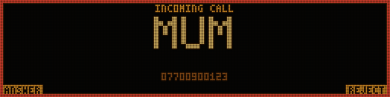
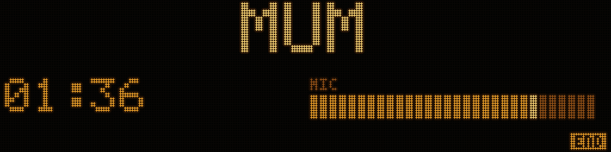
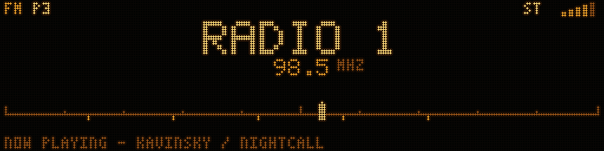

A head unit is a radio and a telephone. Both get proper screens.



Both screens are written and rendered from the real
core/. Neither driver is.
CALLING.md
and
RADIO.md
say exactly what exists, what is designed, and what each costs to build.